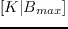

Next: Verification Up: GPU Solutions and Verification Previous: Verification Contents
This kernel operates on a mixed-thread-share model, where each block within the CUDA grid calculates the optimal load for a single channel, and each thread within the block performs the PSD and LK calculations for the line being iterated upon. As such, the 1-D grid takes the form . Each block maintains a shared memory location for the 'best' bit-load permutation from each successive line-round, and thus collects an 'optimal' bit-load across all lines on that channel. As such, strictly speaking this kernel is not limited by the number of lines, but by how long it takes for the bit-loads to converge 3.26